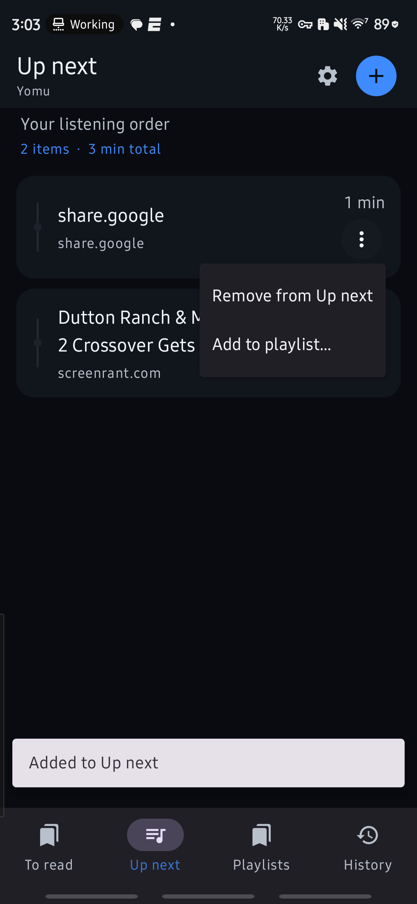

A place for every read
Keep To read, Up next, playlists and Read history distinct, so a saved article never gets lost in the queue.
A personal reading and listening library for Android. Save articles and documents, organize your queue, and listen with sentence highlighting.
Personal Android alpha • Published APK: alpha14 • Source: alpha25. Newer source is not the same as a published or device-verified build.

Keep To read, Up next, playlists and Read history distinct, so a saved article never gets lost in the queue.
Stream speech with sentence highlighting, tap to seek, and choose your playback speed or sleep timer.
Configure speech providers, use local voice support, and explicitly export MP3 audio when you want a file.
Personal Android alpha • Published APK: alpha14 • Source: alpha25. Newer source is not the same as a published or device-verified build.
Published APK · alpha14Release downloads are versioned. Source archives include current code and require the documented build tools. GitHub Actions artifacts may be available for newer successful builds and require GitHub sign-in.